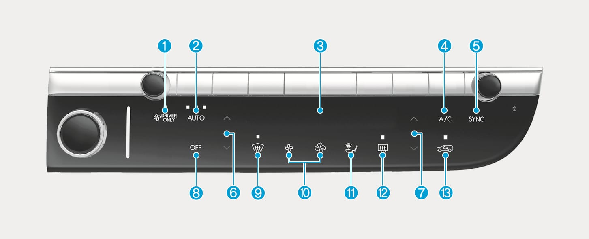

히터와 에어컨(자동 조절식)
히터와 에어컨을 조작할 때 사용되는 버튼의 명칭과 기능을 확인하십시오.
-
차량에 적용된 사양에 따라 버튼 배열이 달라질 수 있습니다.

1C_AutoAircon
- 운전석 개별 공조
- 전자동 조절
- 작동 상태 표시창
- 에어컨 선택
- SYNC(운전석 기준 동일 제어)
- 운전석 온도 조절
- 동승석 온도 조절
- 작동 정지
- 앞유리 서리 제거
- 풍량 조절
- 풍향 선택
- 뒷유리(열선) 서리 제거
- 내기/외기 선택
시동을 걸고 주행 가능(
-
시동 'ON' 상태(
¢ 표시등 꺼짐)에서도 히터 및 에어컨을 작동할 수 있지만 냉난방 효율이 떨어집니다. -
시동 'ON' 상태에서 히터 및 에어컨을 작동하는 경우 배터리가 빠르게 방전될 수 있습니다.
-
히터나 에어컨을 켠 채 차량 안에서 수면을 취하지 마십시오. 질식으로 인해 사망할 수 있습니다.
-
밀폐 상태를 유지한 채 히터나 에어컨을 켜고 장시간 운전하지 마십시오. 두통이나 졸음 증상이 발생할 수 있습니다.